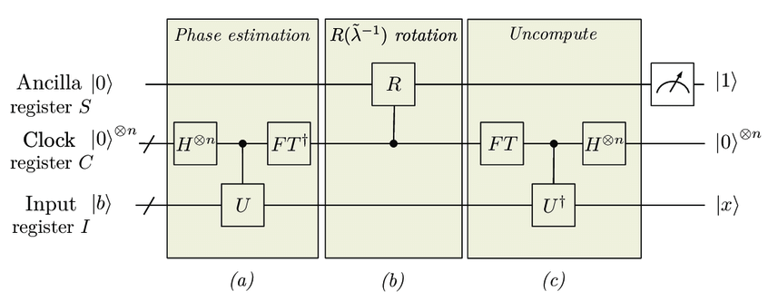

7-2. Harrow-Hassidim-Lloyd (HHL) Algorithm¶
In this section, we introduce the Harrow-Hassidim-Lloyd (HHL) algorithm, one of the most important applications of the quantum phase estimation algorithm, which is a fast “solving” algorithm for (sparse) simultaneous linear equations. It has attracted a great deal of attention because simultaneous linear equations are used in all kinds of scientific and engineering calculations, including electromagnetic, thermal, and fluid analysis, machine learning, and so on. The content of this section is based on the original paper [1] and the review paper [2].
Problem Setup¶
The HHL algorithm efficiently “computes” the solution \(\mathbf{x}=A^{-1}\mathbf{b}\) of the linear system \(A\mathbf{x}=\mathbf{b}\) for a sparse, regular \(N \times N\) matrix \(A\) and an \(N\)-dimensional vector \(\bf{b}\). (In this section, vectors are denoted by bold):.
Let me explain what this equation means. First, the state \(|\mathbf{x}\rangle, |\mathbf{b}\rangle\) with a vector in the ket is defined as follows:.
where \(x_i, b_i\) are the \(i=0,1,\ldots, N-1\)-th component of the vector and \(|i\rangle\) is the computational basis corresponding to the binary representation of \(i\) (for example, \(|5\rangle = |0\cdots0101\rangle\)). To represent a vector of \(N\) components, we only need \(\log_2 N\) qubits. The HHL algorithm is an algorithm that uses the quantum phase estimation algorithm and auxiliary bits to quickly and accurately create a solution state \(|A^{-1}\mathbf{b}\rangle\) from the input state \(|\mathbf{b}\rangle\).
A detailed description of the computational complexity is given at the end of this section, but the HHL algorithm can perform the above transformation with a computational complexity of \(O(\text{poly}(\log N))\), or about \(\log N\) polynomials. The computational complexity of the current best classical algorithm for a similar calculation is \(O(N)\), so the HHL algorithm achieves exponential acceleration. However, there are some important cautions:.
The matrix \(A\) must be SPARSE. Specifically, the number of nonzero components in each row must be \(O(\text{poly}(\log N))\).
From the given classical data \(\mathbf{b}\), it is not easy in general to prepare the state \(|\mathbf{b}\rangle\) on a quantum computer, and input could cost \(O(N)\) of computation. The above \(O(\text{poly}(\log N))\) is based on the assumption that the state \(|\mathbf{b}\rangle\) is available. In Column: Quantum Random Access Memory (qRAM), this point is explained in a little more depth.
Reading out the output solution state \(| A^{-1}\mathbf{b} \rangle\) as the classical vector \(A^{-1}\mathbf{b}\) also takes \(O(N)\) of time, and the exponential acceleration is offset.
Algorithm Flow¶
Let us take the simplest version as an example and explain the flow of the HHL algorithm. The overall schematic is as follows [2]. 
In the following, for simplicity, we assume that \(A\) is a Hermitian matrix. If A$ is not Hermitian, we can set it as
and use the solution \(\tilde{\mathbf{x}} = (\mathbf{0}, \mathbf{x})^T\). Also, multiply \(A\) by an appropriate constant so that the difference between the maximum and minimum eigenvalues of \(A\) is less than \(2\pi\) (to ensure a one-to-one correspondence between eigenvalues and bit strings when using the quantum phase estimation algorithm). And also find the constant shift \(d\) such that all eigenvalues fall within \([0, 2\pi]\) when the eigenvalues of the constant multiplied \(A\) are shifted by d (details will be described later; for now, let \(d=0\) be used).
1. prepare the input state \(|\mathbf{b}\rangle\).¶
As mentioned earlier, we prepare a state \(|\mathbf{b}\rangle\) on the quantum computer from the given classical data (vector) \(\mathbf{b}\) using qRAM and so on. Since we will be using multiple auxiliary bits, the qubits used for the input state will have a subscript \(I\) and be denoted as \(|\mathbf{b}\rangle_I\).
2. Store eigenvalues of \(A\) in auxiliary clock bits using the phase estimation algorithm with unitary operation \(e^{i A }\).¶
Prepare \(n\) quantum bits of auxiliary clock (C) bits for the phase estimation algorithm.
Then, execute the quantum phase estimation algorithm for the unitary operation \(E^{iA}\) and the eigenvalues \(\{ \lambda_i \}_{i=0}^{N-1}\) of \(A\) are stored in the auxiliary clock bit. Specifically, we expand the classical vector \(\mathbf{b}\) by the eigenvector \(\{\mathbf{u}_i \}_{i=0}^{N-1}\) of \(A\) and
when the above formula holds, in the sense of quantum states
holds. Therefore, by the quantum phase estimation algorithm,
where \(\tilde{\lambda}\) is the bit sequence \(j_1\ldots j_n\) of \(\lambda = 2\pi 0.j_1 \ldots j_n\) obtained by displaying \(\lambda\) in binary.
3. Multiply the inverse of the eigenvalues by a control rotation using auxiliary clock bits¶
Let’s add one more auxiliary bit and represent it with subscript \(S\).
Here, the following controlled rotation gate with auxiliary clock bits is acted upon.
In other words, depending on the value \(\tilde{\lambda}\) of the auxiliary clock bit, a gate that performs a Y-rotation \(R_Y(\theta)=e^{i\ theta/2Y}\) of the rotation angle \(\theta = 2\arctan{( - c/(\lambda \sqrt{1-c^2/{\lambda}^{2} }))}\) acts on the auxiliary bit \(S\). \(c\) is a normalization constant introduced to allow such a controlled rotation gate and should be kept smaller than the minimum possible \(|\lambda|\): \(|c| \leq \max |\lambda|\). Note that when the first defined constant shift \(d\) is nonzero, it should be replaced by \(\lambda\) and \(\lambda + d\).
The construction of this controlled rotation gate is rather technical, so interested readers are encouraged to read the note below, but it should be remarked that quite a lot of auxiliary bits are required.
Note: How to construct a controlled rotation gate¶
Since quantum circuits encompass classical circuits, in principle they can perform any operation that can be performed by classical circuits. Therefore, it is possible to construct a gate \(|\lambda \rangle \to |2\arctan( - c/(\lambda \sqrt{1- c^2/\lambda^2}))\rangle\) that superimposes the classical operation \(|\lambda \rangle \to 2\arctan( - c/(\lambda \sqrt{1-c^2/\lambda^2}))\) to calculate the angle of rotation. However, one or more auxiliary bits are required for each irreversible gate such as NAND in a classical circuit, and a significant number of auxiliary bits are needed just to perform this arithmetic. And since the control rotation gate \(|\theta\rangle |0\rangle_S \to |\theta\rangle R_Y(\theta) |0\rangle_S\) according to the value of \(\theta\) can be implemented by using a simple control \(R_Y\) gate \(\Lambda(R_Y)\) like the quantum phase estimation algorithm, a control rotation gate with the desired auxiliary clock bit can also be implemented.
4. Inverse operation of quantum phase estimation to restore the auxiliary clock bits¶
With control rotation, the overall state is as follows.
Applying the inverse operation of the quantum phase estimation algorithm here, we obtain
5. Measure auxiliary bit \(S\).¶
Finally, measure the auxiliary bit \(S\). If 1 is obtained, the state is
If we also projectively measure the auxiliary clock bits to \(|0\cdots0\rangle\), we get state
Actually, this is \(| A^{-1}\mathbf{b} \rangle\)!
\(\because\) Since the eigenvalues and eigenvectors of \(A\) are \(\lambda_i, \mathbf{u}_i\), eigenvalue decomposition yields \(A = \sum_i \lambda_i \mathbf{u}_i {\mathbf{u}_i}^{\dagger}\) (\(\dagger\) is the transpose conjugate). Thus \(A^{-1} = \sum_i (\lambda_i)^{-1} \mathbf{u}_i {\mathbf{u}_i}^{\dagger}\) and \(A^{-1}\mathbf{b} = \sum_i \beta_i (\lambda_i)^{-1} \mathbf{u}_i\) . If we adjust the normalization factor appropriately, we can see that the above state is \(| A^{-1}\mathbf{b} \rangle\).
About the computational complexity¶
The above is the flow of the HHL algorithm. Finally, we mention the computational complexity.
\(s\) is the sparsity of \(A\), i.e., the maximum number of non-zero elements in each row.
\(\kappa\) is the condition number of \(A\): \(\kappa = |\lambda|_{\textrm{max}} / |\lambda|_{\textrm{min}}\) (ratio of the maximum and minimum absolute values of eigenvalues)
\(\epsilon\) is the error from the output state \(| A^{-1}\bf{b} \rangle\).
Then, the computational complexity of the currently most efficient HHL algorithm is \(O(s \kappa \, \textrm{poly} (\log (s\kappa/\epsilon)))\) [3]. Since \(s=O(\textrm{poly}(\log N))\) was assumed, if we focus on only \(N\), the whole is also \(O(\textrm{poly}(\log N))\). On the other hand, since the best conjugate gradient method of the classical algorithm has a computational complexity of \(O(Ns\kappa \log(1/\epsilon))\)[2], the HHL algorithm achieves exponential acceleration for the matrix dimension \(N\).
However, as mentioned in the introduction, this computational complexity is based on the assumption that the input state \(|\mathbf{b}\rangle\) is available, and does not take into account how the output \(|A^{-1} \mathbf{b}\rangle\) should be read out. If this input/output overhead takes \(O(N)\) time, the exponential acceleration described above would be offset, so the HHL algorithm should be used in situations where, for example, only sampling \(\mathbf{x}\) would be useful for practical purposes.